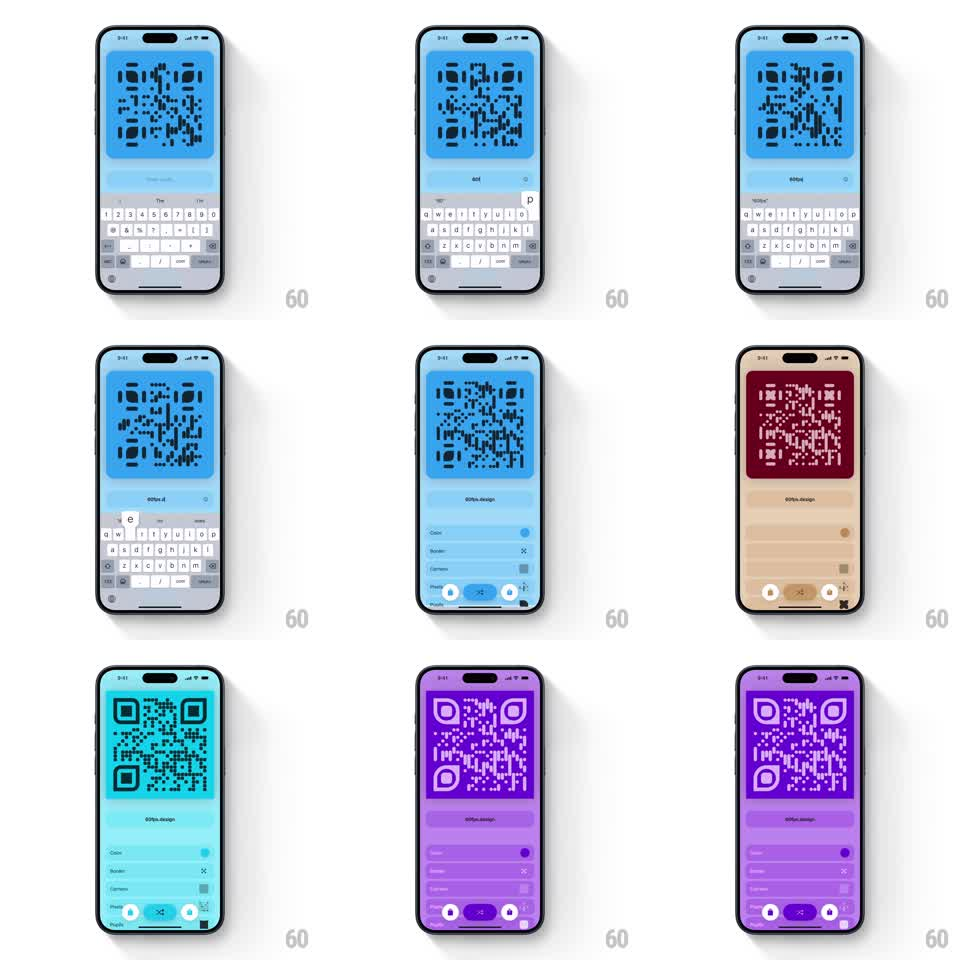

Media
Frame-by-frame

Rebuild this interaction 1:1: Qewie's QR generator theme swap - tapping the swap button instantly repaints the entire app (background, QR card, controls, keyboard-safe areas) to a new palette, with a springy press on the button itself.

Rebuild this interaction 1:1: Qewie's QR generator theme swap - tapping the swap button instantly repaints the entire app (background, QR card, controls, keyboard-safe areas) to a new palette, with a springy press on the button itself. ## Integration Integration: stack-agnostic spec - springs given as stiffness/damping, timed motions as duration + curve; map every value to your framework and animation library of choice. ## Scene Single-screen QR generator: large QR code card top, URL text input below it, keyboard visible during typing, settings rows (Color, Border, Corners) and preset swatches at the bottom with a central swap button. Themes shown: sky blue, sepia/maroon, cyan, purple. ## Motion spec Pattern: tap-triggered global theme swap. - Typing: QR modules update live per keystroke (no animation, direct re-render). - Swap button press: scales 1 -> 0.9 -> 1 (spring ~400/22, ~250ms), icon rotates 180deg. - Theme swap: every surface (screen background, QR card fill, QR module color, input field, control rows, button fills) crossfades to the new palette simultaneously over ~300ms, ease-in-out. - QR contrast is preserved: module color and card color always invert (dark modules on light card, or light on dark). - Next tap cycles to the next palette. ## Calibration - All surfaces change in the same 300ms window - staggered recoloring looks like a bug. - Keep at least 4:1 contrast between QR modules and their card in every theme. ## Reduced motion Theme swaps with no crossfade (instant), button without scale. ## Don't miss - The swap is whole-app, including the input field and bottom controls - nothing keeps the old color. - QR content (the encoded URL) is untouched by the swap; only colors change.